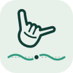

Che surf c'era?Ndo namo? · allena le previsioni
Ti mostro due spot nello stesso momento, con cosa dicevano davvero i modelli quel giorno dei mesi passati. Guardali come guarderesti Windy la sera prima: scegli dove saresti andato e dai il voto alla session. Con le tue risposte l'app impara a leggere le previsioni come chi surfa qui, e ne esce una classifica degli spot.
Carico una situazione…
Dati: Open-Meteo, Copernicus Marine, costa © OpenStreetMap · torna alle previsioni